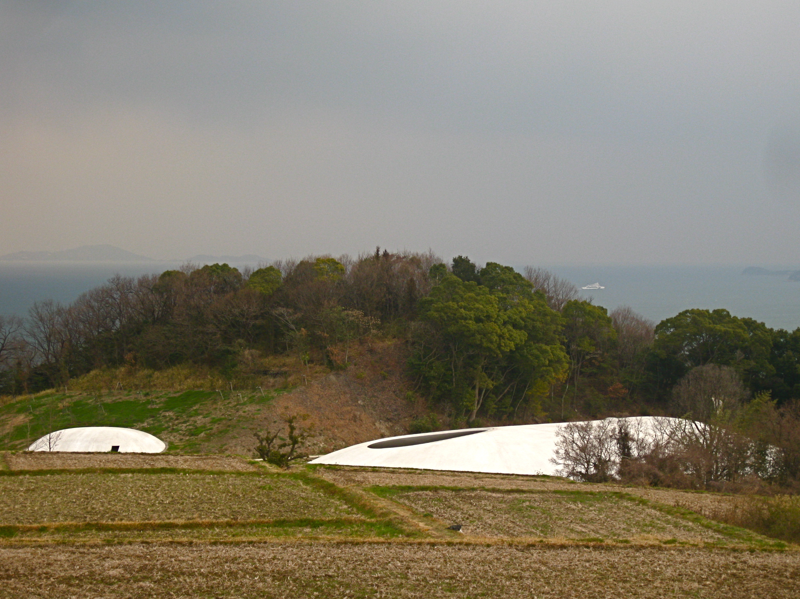

Teshima Art Museum
Ryue Nishizawa & Rei Naito — Teshima, Japan
The Teshima Art Museum offers the clearest illustration of atmosphere as sequence rather than prescription. A seamless concrete shell, poured over an earthen mound and excavated from beneath, produces a column-free interior where water springs from the floor and wind enters through two elliptical ceiling openings.
Nothing instructs the visitor how to feel. Instead, ground, light, sound and moving water register on the body and allow emotion to emerge without being directed. The building does not perform meaning; it creates the conditions for it.
That this effect is produced through extreme structural precision — including a twenty-five-centimetre shell and massive earthen formwork — is important. Ethereal spatial experience and rigorous technical process are not opposites. They depend on each other.
 Fig 1a - exterior shell
Fig 1a - exterior shell
 Fig 1b - landscape shell
Fig 1b - landscape shell

Fig 1c - interior openingFig. 1a-c: Teshima Art Museum, Teshima, Japan. Images: Bea Phi (2025) and KimonBerlin (2013), Wikimedia Commons, CC BY-SA; Wikimedia Commons contributor (n.d.).